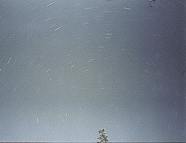

Circumpolar stars of the Southern Hemisphere. The star trials in this 5 minute exposure demonstrate their diurnal motion.
Credit: image courtesy Chris Fluke.
Credit: image courtesy Chris Fluke.
Diurnal motion is the daily motion of stars and other celestial bodies across the sky. This motion is due to the Earth’s rotation from west to east, which causes celestial bodies to have an apparent motion from east to west. A long-exposure photograph of the night sky shows the diurnal motion as star trails – circular orbits (or arcs) centred on the north and south celestial poles.
At any latitude on the Earth, there is a corresponding range of declinations for which stars:
- Never set – they are always above the horizon. These are known as circumpolar stars.
- Rise and set at different times throughout the year – due to the Earth’s motion around the Sun, stars rise a few minutes earlier every day.
- Never rise – they are always below the horizon. For example, to an observer in Australia the north pole star, Polaris, never rises.